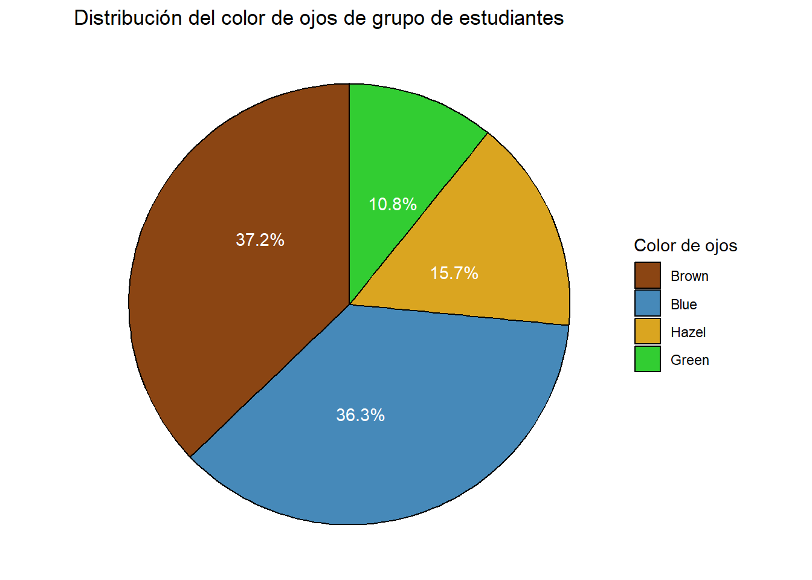

library(tidyverse)
library(plotly)
library(ggthemes)
library(hrbrthemes)Práctica N°2 - Curso de Programación en R
Carga de Paquetes
Importar bases de datos de R
data("airquality")
data("HairEyeColor")Generación de distintos tipos de gráficos con ggplot y plotly
1. Generar un gráfico de dispersión de Temperatura vs Ozono
dispersion <- airquality |>
drop_na(Ozone) |>
ggplot(aes( x = Temp, y = Ozone, color = as.factor(Month))) + #as.factor convierte en categóricos los valores numericos de Month
geom_point(
aes(
text = paste0(
"Ozono [ppb]: ", Ozone,"\n",
"Temperatura [°C]: ", Temp, "\n",
"Mes: ", Month, "\n"
)
)
) +
scale_x_continuous(limits = c(55, NA)) +
ggtitle("Diagrama de dispersión") +
xlab("Temperatura [°C]") +
ylab("Ozono [ppb]") +
labs(subtitle = "Temperatura vs. Ozono",
caption = "Fuente: Paquete airquality de R",
color = "Mes") +
theme_minimal()
# Gráfico de dispersión plotly
ggplotly(dispersion, tooltip = "text") |>
config(locale = 'es') Los gráficos de dispersión son útiles para encontrar la relación entre dos variables. En este caso se observa que hay una tendencia positiva en los datos, a medida que aumenta la temperatura también aumentan las concentraciones de Ozono. Algunos datos se alejan más de la tendencia general de los demás puntos, estos se pueden considerar outliers o atípicos. Si desea más información sobre este tipo de gráfico puede consultar el enlace Gráfico de dispersión
2. Generar un gráfico de barras con la concentración de Ozono promedio por mes
#Agrupo y calculo los promedios por mes
df <- airquality |>
group_by(Month) |>
summarise(
promedio_mes = mean(Ozone, na.rm = TRUE)) # Elimino nans
# Defino los colores para las barras
colores <- c("#D8B5FF", "#A193E6", "#8665B8", "#894F8C", "#3F0066")
graf_barras <- df |>
ggplot(aes(x = as.factor(Month), y = promedio_mes)) +
geom_bar(
stat = "identity",
aes(
text = paste0(
" Ozono promedio por mes: ", round(promedio_mes, 2)
),
fill = as.factor(Month)
)
) +
ggtitle("Concentración de Ozono promedio por mes") +
xlab("Mes") +
ylab("Ozono [ppb]") +
labs(caption = "Fuente: Paquete airquality de R") +
theme_minimal() +
scale_fill_manual(values = colores, name = "Mes") # Pongo los colores definidos y nombre a la leyenda
# Gráfico de barras plotly
ggplotly(graf_barras, tooltip = "text") |>
config(locale = 'es') Este gráfico permite observar la magnitud promedio para cada mes de las concentraciones de ozono. De aquí se concluye que las mayores concentraciones de O3 se registraron en los meses de julio y agosto, las cuales están cercanas a 60 ppb. Si desea profundizar sobre los gráficos de barras puede consultar el siguiente enlace.
3. Gráfico de pastel para color de ojos de un grupo de estudiantes
# Agrupar los datos
df1 <- data.frame(HairEyeColor) |>
group_by(Eye) |>
summarise(frecuencia = sum(Freq))
#Establecer colores personalizados
colores <- c("Brown" = "#8B4513", "Blue" = "#4689B9", "Hazel" = "#DAA520", "Green" = "#32CD32")
# Gráfico de pastel
grafico_pastel <-
df1 |>
ggplot(aes(x = "", y = frecuencia, fill = Eye)) +
geom_bar(width = 1, stat = "identity", color = "black") +
coord_polar(theta = "y") +
geom_text(
aes(label = paste0(round(frecuencia / sum(frecuencia) * 100, 1), "%")),
color = "white",
position = position_stack(vjust = 0.6) # para ajustar la posición del texto en cada porción
) +
scale_fill_manual(values = colores) +
labs(title = "Distribución del color de ojos de grupo de estudiantes",
x = NULL,
y = NULL,
fill = "Color de ojos") +
theme_void()
# Despliegue del gráfico
grafico_pastel
Este gráfico permite observar la distribución de color de ojos de un grupo de estudiantes en porcentaje %. Aquí se observa que la mayoría de los estudiantes tiene ojos color café, seguidos de ojos azules con una proporción muy similar, el color de ojos más escaso entre este grupo es el verde. Para obtener más información sobre diagramas de pastel siga el enlace Gráfico circular.
4. Histograma: Distribución de frecuencia de la concentración de ozono O3
# Histograma en ggplot
hist <- airquality |>
ggplot(aes(x = Ozone)) +
geom_histogram(
aes(
text = paste0(
"Concentración de Ozono: ", round(after_stat(x), 2), "\n",
"Frecuencia: ", after_stat(count)
)
),
bins = 8,
color = "white",
fill = "lightgreen"
) +
scale_x_continuous(limits = c(0, NA)) +
coord_cartesian(ylim = c(0, 40)) +
ggtitle("Distribución de la concentración de Ozono [ppb]") +
xlab("Ozono [ppb]") +
ylab("Frecuencia") +
labs(caption = "Fuente: librería airquality de R") +
theme_minimal()
# Histograma plotly
ggplotly(hist, tooltip = "text") |>
config(locale = 'es')Este gráfico permite observar la distribución de frecuencia de las concentraciones de Ozono. Se evidencia una distribución asimétrica sesgada a la izquierda, con la mayoría de los datos ubicados entre 0 y 45ppb. Los valores menos frecuentes son los que están por encima de 200ppb. Si desea ahondar en información sobre este tipo de gráfico, haga click aquí.